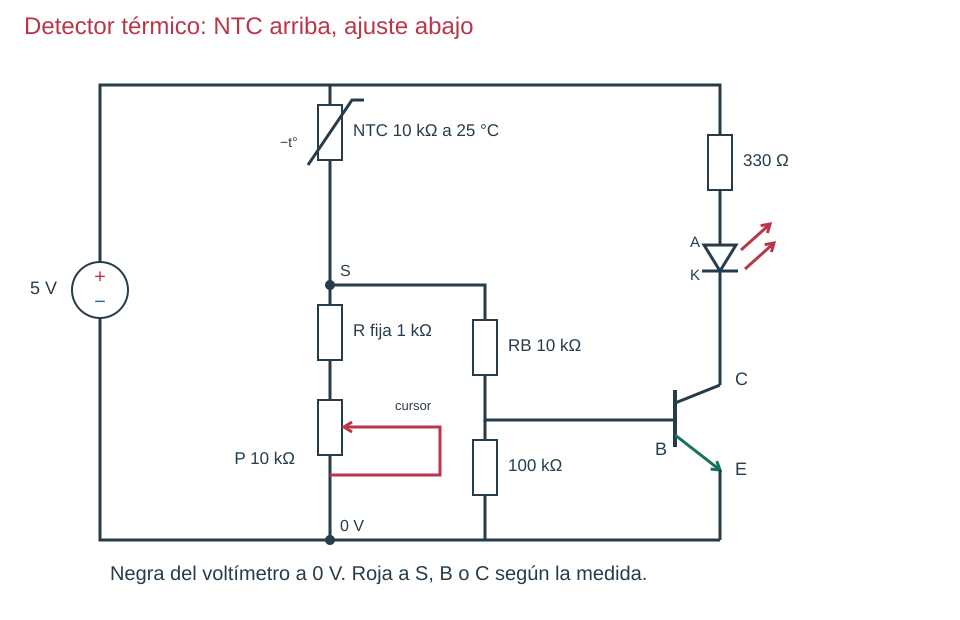
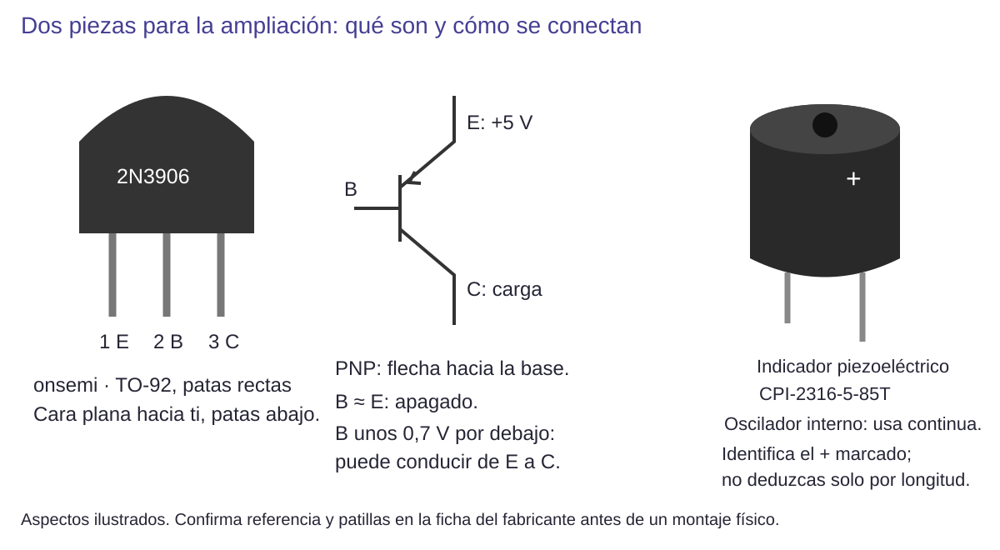
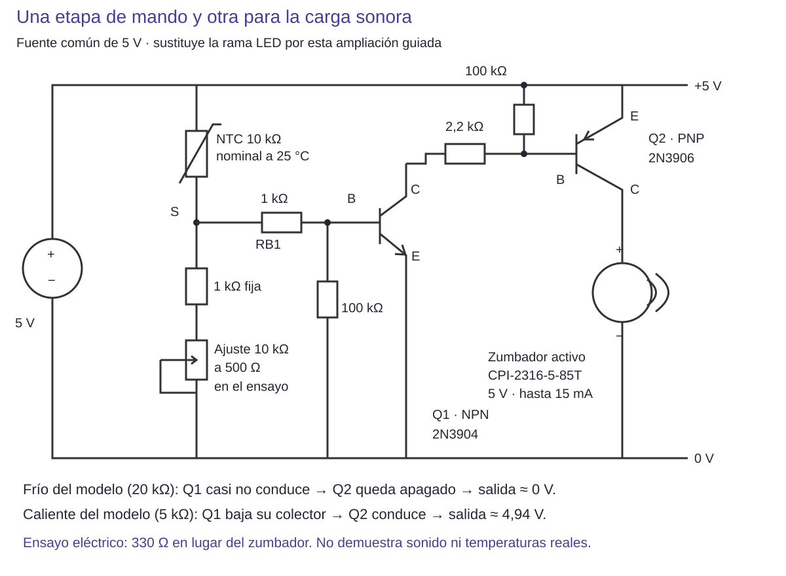

Contenido
Resultado básico: detector térmico con LED
La señal de aviso básica es luminosa. La NTC reduce su resistencia al calentarse. Al colocarla arriba, la salida S tiende a aumentar y proporciona más mando al transistor. Que el LED llegue a encender con un calentamiento suave depende de los componentes y del ajuste: la observación se registra aunque el cambio sea pequeño.

Etapa 1 · reconocer y medir
Usa una NTC de dos terminales, nominalmente 10 kΩ a 25 °C. Aislada, sin fuente y en Ω, mide en ambiente, después de sostenerla suavemente entre los dedos y tras dejarla volver al ambiente. Debe tender a disminuir R al calentarse. No uses llama, agua ni objetos calientes. Un sensor integrado de tres terminales no sustituye a esta NTC.
Etapa 2 · ensayar cambios controlados en simulación
Si no hay NTC, usa una resistencia de 20 kΩ, después 10 kΩ y después 5 kΩ, cambiándola con la simulación detenida. Son tres valores resistivos: no representan temperaturas concretas sin una curva. Con resistencia inferior total de 1,5 kΩ, calcula primero S sin base.
| R superior | Cálculo sin carga a 5 V | Salida | Predicción |
|---|---|---|---|
| 20 kΩ | 5 × 1,5/(20+1,5) | 0,349 V | Mando muy pequeño |
| 10 kΩ | 5 × 1,5/(10+1,5) | 0,652 V | Aumenta el mando; puede seguir en corte |
| 5 kΩ | 5 × 1,5/(5+1,5) | 1,154 V | Más posibilidad de conducción |
Al conectar la base cambian estas tensiones. Por ejemplo, el modelo del libro aproxima 1,107 V en S para 5 kΩ, con unos 33,7 µA de base. Eso no garantiza saturación ni un brillo físico concreto.
Etapa 3 · montar por bloques comprobables
- Sin alimentar: + → NTC → S → 1 kΩ fija → ajuste de 10 kΩ → negativo. Cursor unido a un extremo como aprendiste antes.
- Comprueba S con base desconectada; roja en S y negra a 0 V.
- Desconecta y añade S → 10 kΩ → B, 100 kΩ entre B/E y la rama de LED/330 Ω a C.
- Alimenta y ajusta buscando diferencia entre los estados que puedas reproducir. Mide S, VCE y la caída en 330 Ω.
- Repite calentamiento suave y retorno a ambiente. Separa en el registro el modelo resistivo de la medida térmica real.
Diagnóstico: el resultado también puede ser «cambia poco»
Si R de la NTC cambia pero S casi no lo hace, comprueba el ajuste y los puntos de medida. Si S cambia pero el LED no, verifica la salida con mando manual y observa VCE. Si la variación térmica es pequeña, no aumentes la temperatura de forma insegura para forzar el resultado. Explica qué has podido comprobar y qué no.
Ampliación guiada: añadir una salida sonora con su propia etapa
Qué cambia y por qué
Un zumbador activo incorpora el oscilador que produce el tono: se alimenta con continua. El piezo pasivo del simulador necesita una señal alternante y no lo sustituye. Elegimos como referencia Same Sky CPI-2316-5-85T, indicador piezoeléctrico activo de 5 V y consumo máximo nominal de 15 mA. No se conecta directamente en lugar del LED: añadimos otro transistor para suministrarle corriente.
Conoce primero el transistor PNP
Q1 sigue siendo el NPN 2N3904. Q2 es un PNP onsemi 2N3906: también tiene E, B y C, pero aquí su emisor se une al positivo. Con base casi a la tensión del emisor permanece apagado; al bajar la base unos 0,7 V puede conducir de E a C. Su flecha entra hacia la base, al contrario que la del NPN. La resistencia entre B y E lo mantiene apagado cuando Q1 no tira de su base.

Abrir esta imagen a tamaño completo

Abrir esta imagen a tamaño completo
Ejemplo de dimensionado, paso a paso
Imando ≈ (Vfuente − VEB2 − VCE1) / Rmando
Tensiones en V, resistencia en Ω e intensidad en A. VEB2 es la caída del emisor a la base de Q2; VCE1, la caída del colector al emisor de Q1. Esta estimación se usa con ambos transistores conduciendo.
Para una carga de 15 mA elegimos inicialmente una corriente de base de Q2 de al menos 1,5 mA: una relación corriente de carga/base de 10. Con Q1 conduciendo, una estimación es (5 − 0,7 − 0,2)/2200 = 1,86 mA por la resistencia de 2,2 kΩ; unos 0,007 mA circulan por los 100 kΩ entre B/E de Q2. Es un cálculo de diseño, no una garantía de la caída exacta de cada transistor.
Q1 tiene que retirar esa corriente de mando. Por eso RB1 cambia de 10 kΩ a 1 kΩ en esta ampliación. Se conserva su resistencia B/E de 100 kΩ. Se retira la rama LED/330 Ω de su colector. No mezcles a medias las dos versiones.
Montaje y comprobaciones por etapas
- Prepara sin fuente: identifica ambas referencias y E/B/C; mide el ajuste de 10 kΩ para que presente 500 Ω entre los terminales usados. Con la fija de 1 kΩ, el tramo inferior suma 1,5 kΩ.
- Prueba Q2 aparte: E a +5 V; C a una resistencia de prueba de 330 Ω y esta a 0 V; 100 kΩ entre B y E. Deja el extremo izquierdo de 2,2 kΩ sin conectar: salida próxima a 0 V. Apaga, une ese extremo a 0 V y alimenta: la salida debe subir cerca de 5 V. Mide roja en C de Q2 y negra en 0 V. Si no cambia, revisa PNP y patillas.
- Añade Q1: desconecta. Sustituye la unión anterior a 0 V por el colector de Q1. Emisor Q1 a 0 V; 100 kΩ B/E; desde S a B una resistencia de 1 kΩ. Conserva la carga de prueba: todavía no estás probando sonido.
- Ensaya el sensor por resistencias: coloca 20 kΩ arriba y después 5 kΩ, apagando entre cambios. Mide S, colector Q1 y salida Q2. Son estados resistivos de ensayo, no grados de temperatura.
- Solo para el ensayo físico del sonido: tras comprobar eléctricamente los estados, desconecta y sustituye la carga de prueba de 330 Ω por el indicador activo especificado: + a C de Q2, − a 0 V. Comprueba primero su funcionamiento alimentado directamente a 5 V y con polaridad correcta. Registra después si la etapa lo activa y lo desactiva; si solo cambia la tensión o el tono es inestable, ese es el resultado que debes explicar.
Qué se ha comprobado y qué no
Se ha ejecutado una simulación eléctrica de continua con dos transistores genéricos de ganancia 50 y una carga de prueba de 330 Ω. Con 20 kΩ arriba se obtuvieron S = 0,344 V y salida prácticamente 0 V. Con 5 kΩ, S = 0,898 V, colector Q1 = 0,067 V y salida Q2 = 4,936 V; la carga recibió 14,96 mA. Con 10 kΩ la salida ya alcanzó 4,821 V: añadir la segunda etapa cambia la sensibilidad. No se debe heredar el ajuste del detector básico.
Alcance: la carga resistiva permite comprobar el mando eléctrico, pero no reproduce el oscilador del zumbador, sus transitorios ni su sonido. No se ha ensayado físicamente este conjunto. No se garantiza un umbral térmico, un tono limpio cerca de la transición ni una temperatura de activación. Mantén el resultado básico LED como evidencia común; registra esta ampliación por separado si se realiza.
Predice y diagnostica
Antes de montar, explica la cadena: al disminuir la resistencia superior, S aumenta; Q1 conduce más y baja su colector; Q2 recibe mando y sube la tensión de la carga. Si S cambia y la salida Q2 no, ensaya Q2 por separado. Si la salida sube y no hay sonido, verifica referencia, polaridad y prueba directa del indicador; no supongas que un piezo pasivo es equivalente.
Reto con menos ayuda: cambia el ajuste inferior una sola vez y repite los dos estados. Explica por qué no puedes traducir ese ajuste a grados sin caracterizar la NTC y la transición real.
Referencias para identificar los componentes: 2N3906, ficha onsemi; CPI-2316-5-85T, fabricante. No se sustituyen por cualquier pieza de aspecto parecido.
Ahora tú: explica antes de comprobar
¿Es correcto escribir «a 5 kΩ se activa a 40 °C» usando solo la tabla anterior?
Solución razonada, sin cronómetro
No. La tabla ensaya resistencias, no contiene la curva resistencia–temperatura de la NTC. Además, el ajuste y la carga del transistor cambian la transición.
Aplicación autónoma · apartado 6.3
Presenta datos de tres estados, di si son simulados o físicos y explica la cadena calentamiento → resistencia → S → salida. Propón una mejora para hacer más repetible el ensayo sin cambiar varias variables a la vez.
Comprueba y razona
Interpreta, decide y explica
Responde antes de abrir la explicación. Sin cronómetro; usa Tab y Entrar para desplegarla.
¿Qué permite afirmar una simulación con resistencia superior de 20/10/5 kΩ?
Ver razonamiento
Permite relacionar resistencia y salida. No fija temperaturas ni demuestra calentamiento físico de la NTC.
La resistencia de la NTC disminuye y S aumenta, pero el LED apenas cambia. ¿Qué dos medidas en la etapa de salida te ayudarían a diagnosticarlo?
Ver razonamiento
Mide VCE y la caída en la resistencia de 330 Ω para calcular la corriente LED. VCE pequeña ya en ambos estados sugiere salida muy conducida; VCE alta con poca corriente orienta a mando insuficiente o fallo en la rama. Comprueba aparte la salida con mando manual y conserva las medidas reales.